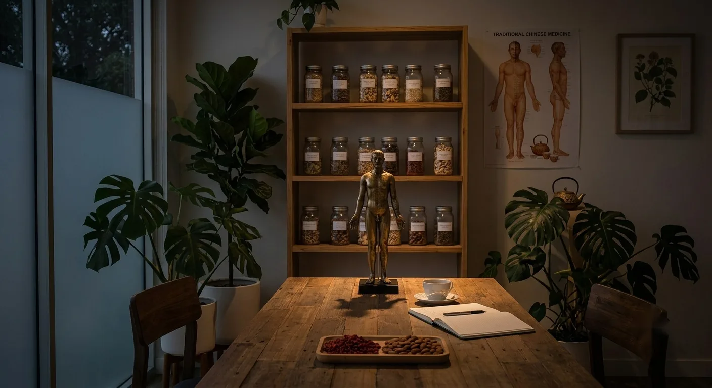
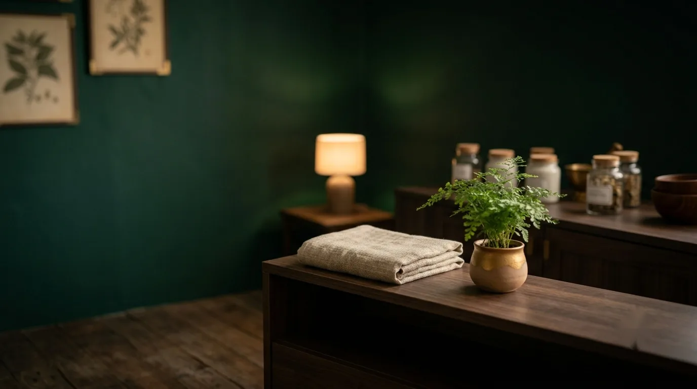

Acupuncture for Stress
Support for a nervous system stuck in overdrive: muscle tension, a racing mind and the sense of never quite switching off.
Read more →
Every concern starts with a conversation, not a fixed protocol.
These are three of the most common reasons people come to Ānshén Acupuncture. Each page below explains how Chinese medicine is commonly used to support it, honestly and without overstating what it can do.
Support for a nervous system stuck in overdrive: muscle tension, a racing mind and the sense of never quite switching off.
Read more →A calm, psychology-informed approach alongside your other care, for the physical and mental weight anxiety can bring.
Read more →Support for disrupted or restless sleep, considered alongside stress, mood and your overall health, not in isolation.
Read more →Our approach
Stress, anxiety and sleep rarely arrive one at a time. A wound-up nervous system tends to show up in all three at once, which is why every assessment at Ānshén Acupuncture looks at the whole picture rather than treating a single symptom in isolation.

Good to know
No. Acupuncture isn't a cure for any of these, and no honest practitioner will promise that. What it can offer is support: a calm, unhurried space and a technique many people find helps settle an overactive nervous system, used alongside your other care rather than instead of it.
If stress, anxiety or sleep problems are significantly affecting your life, please speak with your GP or a mental health professional first. Acupuncture can sit alongside that care, but it isn't a substitute for medical or psychological treatment.
Whichever one matches what's bringing you in. Many people find stress, anxiety and sleep are connected, so an initial assessment will usually consider all three regardless of which page led you here.
A 90 minute initial acupuncture appointment: time to talk through your history and current concerns, a Chinese medicine assessment, and your first treatment, all in one unhurried visit.
Get in touch and we can help you work out whether we're a good fit for what you're dealing with.